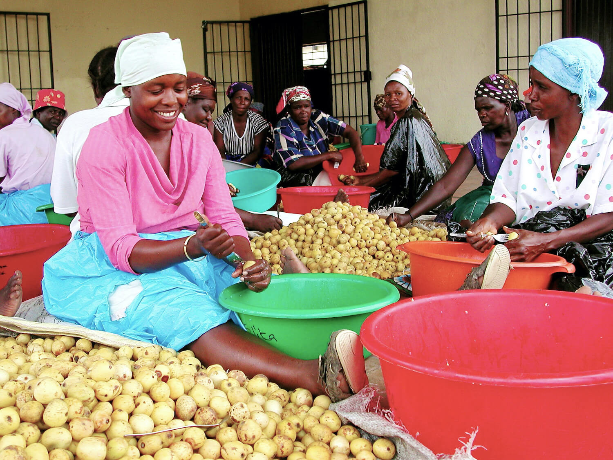
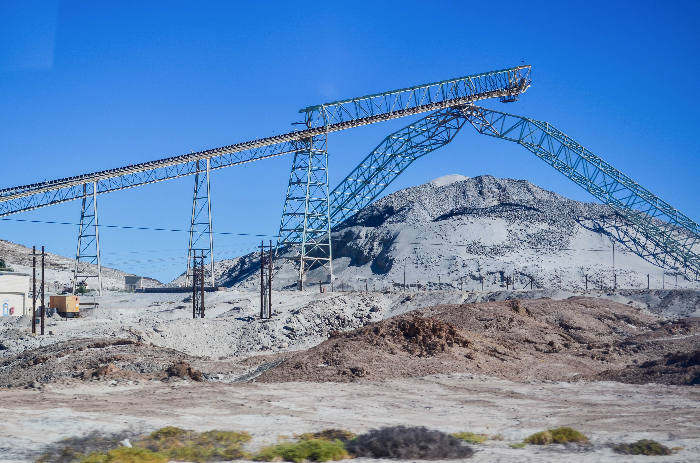

Under the guidance of the BioTrade Initiative, the Eudafano Women’s
Cooperative, a community organization in Namibia, has provided a secure
economic income for 2500 women and their indigenous communities.
In 1996, the United Nations Conference on Trade and Development
(UNCTAD) launched its BioTrade Initiative, which emphasizes the
sustainable extraction, production and trade of biodiverse resources,
and has established a network of partners and small business in over
80 countries since.

Women harvesting oil from Marula seeds. Please note: these women are in South Africa, but carry out the same work as the Ondangwa women in Namibia. | Sheona Shackleton / CIFOR.
The Eudafano Women’s Cooperative, based in Ondangwa Namibia, is
supported by the Namibian Government and the Gesellschaft für
Internationale Zusammenarbeit (GIZ), in order to successfully grow
their business in line with the BioTrade Initiative Principles and
Criteria. The 2500 women currently employed at Eudafano Women’s
Cooperative are sustainably harvesting and processing Marula seeds
and Kalahari melon oil seeds.
Marula is a tree that is native to Southern Africa and Madagascar.
Due to its oil’s linoleic fatty acid and oleic acid content, as well
as its antioxidant properties, it is extremely beneficial to nourishing
healthy human skin. Additionally, marula oils can preserve meat, and
be added to popular foods and drinks.
‘Not only is this a sustainable business, it is entirely made up of
and led by indigenous and local women.’
The Eudafano Women’s Cooperative grows Marula and Kalahari melon trees,
which are sustained via rainfall and regenerative agriculture. The
trees are planted in such a way which conserves local biodiversity,
rather than degrading it to create major plantations—as seen in palm
oil production. The company sells their oils to both domestic and
international businesses for cosmetic use, their largest client
currently including the international giant, The Body Shop.
The Ondangwa women produce up to 12 tons of Marula oil annually,
generating a revenue of $158,000 in 2020—which is a 14% increase from
the previous year. Not only is this a sustainable business, it is
entirely made up of and led by indigenous and local women.
The growth of their business has been increasing each year; its
success being attributed to their reliance on their employees’
knowledge about their local environment and their long-established
practices that prevent overexploitation of natural resources.
Fallen Marula fruit (Sclerocarya birrea). | Bernard Dupont / Flickr
What is the BioTrade Initiative?
The BioTrade Initiative aims to provide a framework which places
biodiversity as the central natural capital in a green economy model.
It promotes a sustainable strategy for the extraction, trade and use
of bio-diversity derived products, which is in line with the objectives
set out by the Convention on Biological Diversity.
The BioTrade Initiative framework uses three approaches to carry out
their objectives: (1) The ecosystems approach, (2) the adaptive
management approach and (3) the value chain approach. The
ecosystem-based approach manages the sustainable use of
ecosystems by placing protective policies on the ecosystem as a whole,
as opposed to a species-based conservation approach. Ecosystems are
deeply interconnected, thus it is vital to keep a balance between all
organisms, to ensure its health and resilience, as well as the local
communities which rely on it.
‘A framework which places biodiversity as the central natural capital
in a green economy model.’
The adaptive management approach is the use of guidelines that have
been set out by scientific research and data collection, which
identifies and measures the impact of certain practices on the local
environment. Putting scientific findings into practice, allows one to
design ways to either reduce negative environmental impacts or mitigate them.
Finally, the value chain approach seeks to strengthen and
increase the transparency of value chains of biodiversity-derived
products. This involves equal sharing the environmental, social and
economic benefits of the end product amongst all who were involved in
the entire production process.
Transparency of companies is key to marketing their social corporate
responsibility and thus expanding a sustainable business. BioTrade
companies or partner websites need accounts of who is involved in the
creation of their product, the quality of their employees’ work
environment and the equitable share they receive from any economic
benefits. Companies should also explain in detail the sustainable
methods used to create their products and prove these are backed by
scientific evidence.
The BioTrade Initiative works by approaching companies or people
groups and offering them to sell goods and services (ie., textiles,
handicrafts, cosmetics, phytopharmaceuticals and ecotourism), which
have been produced in an environmentally and human-friendly way. Over
time, the goal is for these companies to then shift the majority of
their investments to solely BioTrade products.
‘Transparency of companies is key to marketing their social corporate responsibility.’
Currently the Namibian economy largely generates its revenue from
mineral exports—heavily extracting and processing diamond and
uranium—which accounts for 10% of the country’s GDP. Mining uranium,
no matter how the extraction is carried out, creates radioactive waste
which can contaminate the surrounding environment.
However, Biotrade currently contributes to 4.5% of Namibia’s GDP, and
is projected to grow to 7% within the next decade. BioTrade in Namibia
is a significant stepping-stone to transforming the country into a
green economy, as it involves markets such as indigenous natural
products, sustainable wildlife, livestock breeding, aquaculture,
timber forest products and the agricultural harvesting of indigenous
crops by indigenous people. As such, a green economy offers economic
development and improved livelihoods for poorer, marginalized communities.

Open pit of the Rio Tinto Rössing uranium mine, Namibia. | jbdodane.com / www.jbdodane.com
Potential market growth
Namibia can continue to expand their Biotrade initiatives by setting
up similar projects to that of the Eudafano Women’s Cooperative. Other
products which have the potential to expand their markets are Devil’s
Claw and Kalahari Moth Silk.
Devil’s Claw has already provided stable jobs to communities in Zambia,
using the BioTrade framework. As this plant is found in the dry
climate of the Kalahari Desert, it has potential to generate income
for communities in Zimbabwe, South Africa, Mozambique, Botswana and
Angola as well.
‘BioTrade incorporates marginalized communities into the market economy.’
Devil’s Claw is a plant which has analgesic and anti-inflammatory
properties, thus its extract can be sold as a phytopharmaceutical
product. Small plantations of Devil’s Claw can be grown near
rural communities where the harvesters live. The plant tubers must be
carefully extracted each spring, in order for the top-roots to remain
in good condition, as it is from these that the plant will regenerate.
The UNEP states that, ‘the move towards a green economy seeks to
develop and capitalize on those resources available to the poorest
segments of the population, incorporating marginalized communities
into the market economy and ensuring that they receive a fair share of
the benefits derived from the productive activities in which they engage.’
Featured Image: Eudafano Women’s Cooperative
Biotrade Initiative (2007) UNCTAD BioTrade Initiative Principles and Criteria. United Nations Conference on Trade and Development.
Lombard C. and Beckett K. (2012) Devil’s Claw value chain analysis—Final report. Phytotrade Africa. Millennium Challenge Account Namibia.